Challenge
How to help stay-at-home moms connect with other moms and facilitate real-world social interaction?
I used to live in a graduate housing where I met many stay-at-home moms. I was surprised that they did not have a platform or organization that helped them get to know other moms in the same neighborhood. Thus, I heard frustrations about a lack of deeper relationship with adults who are going through the same experience and not being able to have much adult conversations.
Final Design Overview
Stay warm and active in the Tropics.
Although kids are great, sometimes moms just need friends who understand what they are going through.
Tropics is a place to do just that! It is a community for moms to connect and support each other.

1. Three simple steps to find the best friend match
With location, kids age, and interests, the system will automatically generate a list of friends in the same area with similar kids age and mutual interests!

2. Be on top of what is happening in the community
Search or browse through the events with essential information you need and easy navigation.

3. Create events and invite friends all in one place
Organize your own events, whether it is a no-kids gathering or family potluck! Invite your friends right in the app. No more cross-platforms hassle.

4. Support other moms who are on the same boat
Share resources, ask questions, or just vent. It is all about being part of the supportive community of moms aka strong women!
- 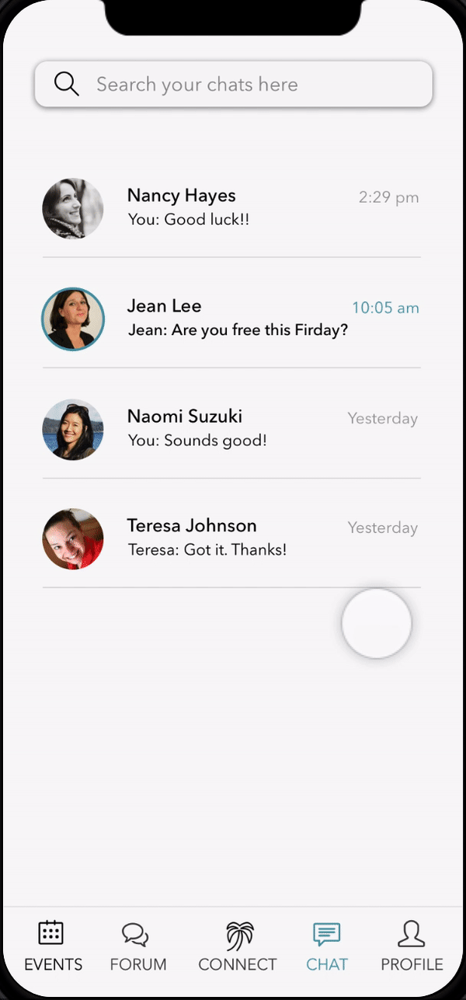
5. Stay connected all the time
Chat room made it easier to keep in touch with friends. You can also share events to chat room directly!
Design Process at a Glance

Research
| Interviews and Survey
I kicked off by conducting user interviews for needs finding. Additionally, In order to get a more diverse samples, I distributed an online survey that reached potential users across the U.S. The result shows that there are top three qualities that moms care about the most when they meet new friends.
Apart from that, moms would like to see more efficient ways to do the following things:
- 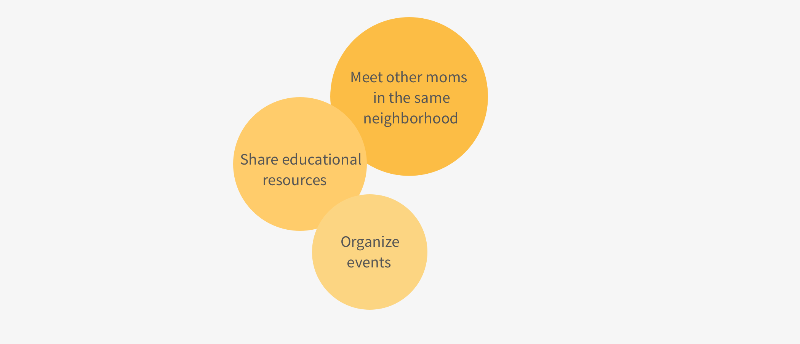
But hold on! Does it sound like what Facebook can do? Here’s what moms have to say about Facebook:
" It gets pretty chaotic on Facebook because there’re just so many things happening and it’s hard to keep track of them. "
" It’s more passive to make friends on Facebook because you don’t just add someone without having a certain degree of interaction before. "
| Define the Problem
From the problems that emerged from interviews and survey, I found they all rooted from 2 essential issues.
- 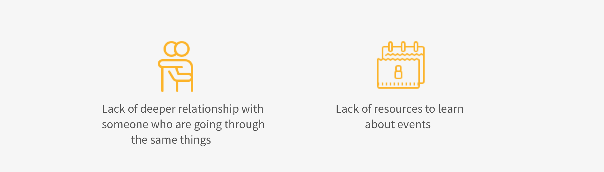
| Competitive Analysis
After reviewing multiple platforms, including Facebook groups, mobile apps (Social.Mom/ Mom.Life/ Peanut), and websites for moms network, I found 3 important aspects that are missing in these platforms.
● No friends match based on interests
● A lack of organized discussion board for different topics, especially educational resources
● A lack of systemized list of events in the community
Explore
| Sketches and Storyboard
Based on the findings, I brainstormed 8 possible solutions to tackle the problems. The solutions aim for different devices and mediums.
- 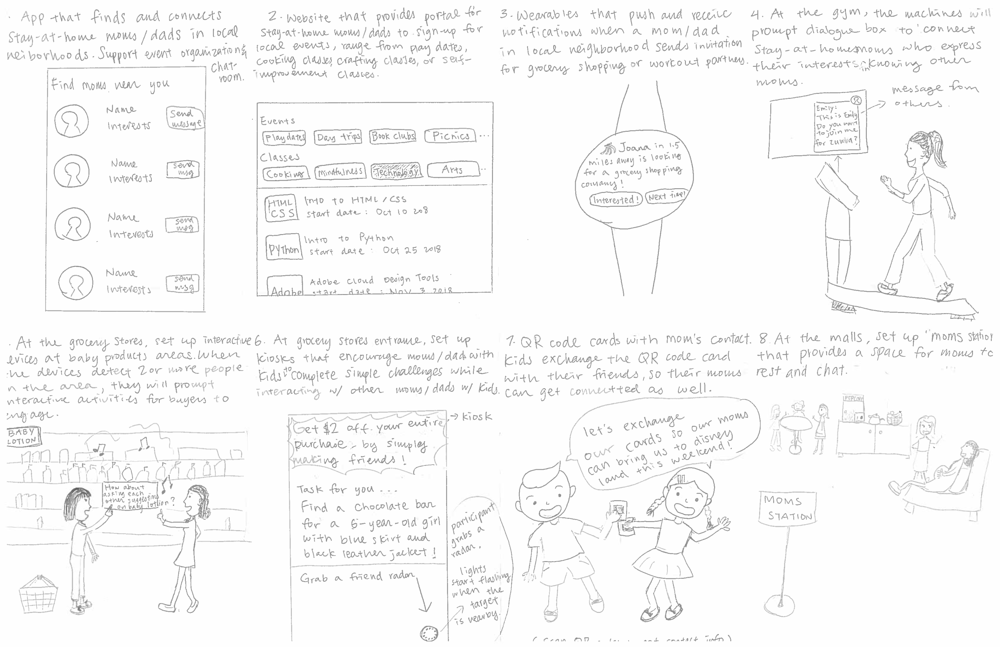
To bring the solutions to life, I also created scenarios for each solution that capture users’ struggles, emotions and interaction with the devices.
Note: The storyboard is in vertical order.
- 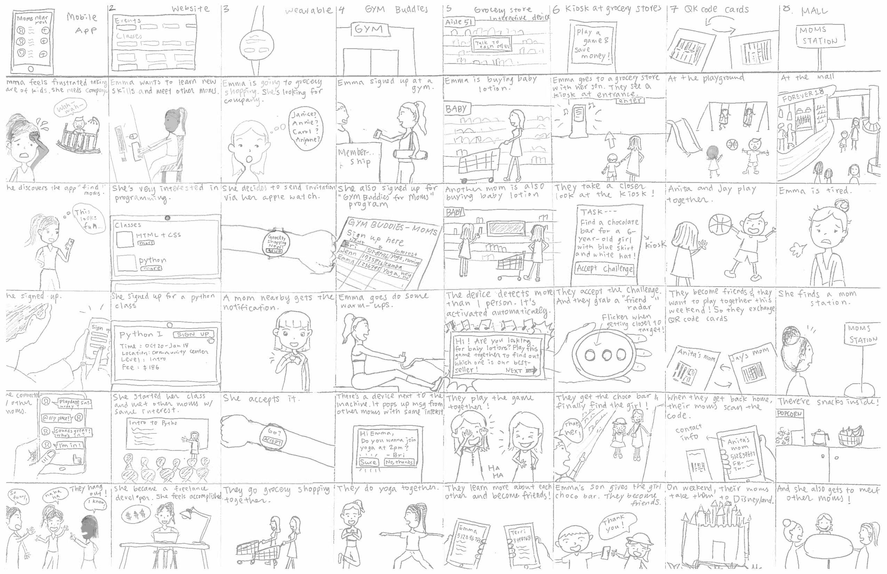
| Personas and User Stories
With a better understanding of my potential users, I created 3 personas and 1 anti-persona that reflect user’s motivation and behavior. These personas help me build empathy with the users and prioritize needs as well as features. With each persona, I also created user story for them based on their profile.
- 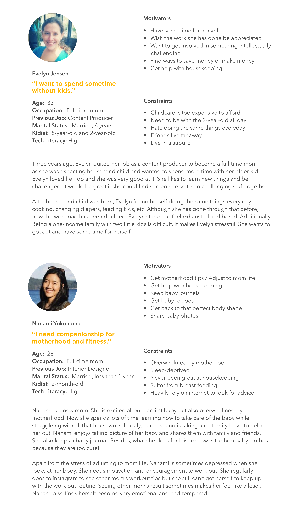
| Solution Decision
Throughout the exploration phase, I talked with multiple moms to validate my assumptions. It really helped me narrow down my focus and avoid self-referential design. Originally, my favorite solution was a public interactive device in grocery stores that prompted physical interaction. However, most of the moms had comments like these regarding this idea:
" Although it sounds interesting, in reality I probably won’t try it just because I want to finish my grocery shopping as fast as I can. "
" I’ll probably try it once and that’s it. "
Therefore, synthesizing the research and feedback, I decided to go with a mobile app because it is more versatile that users can decide when and how they are going to use it. My application will center around 3 design rationales:
- 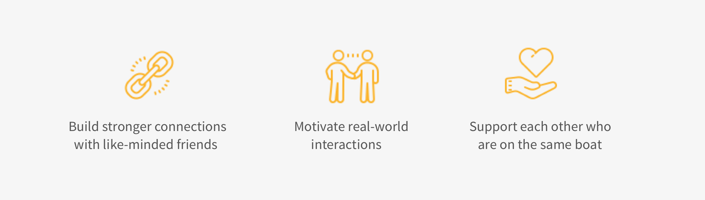
Materialize
| Questions-Options-Criteria
I conducted a Questions-Options-Criteria analysis to evaluate multiple feature and function options. It helped me reflect on my previous research and assess each design option.
- 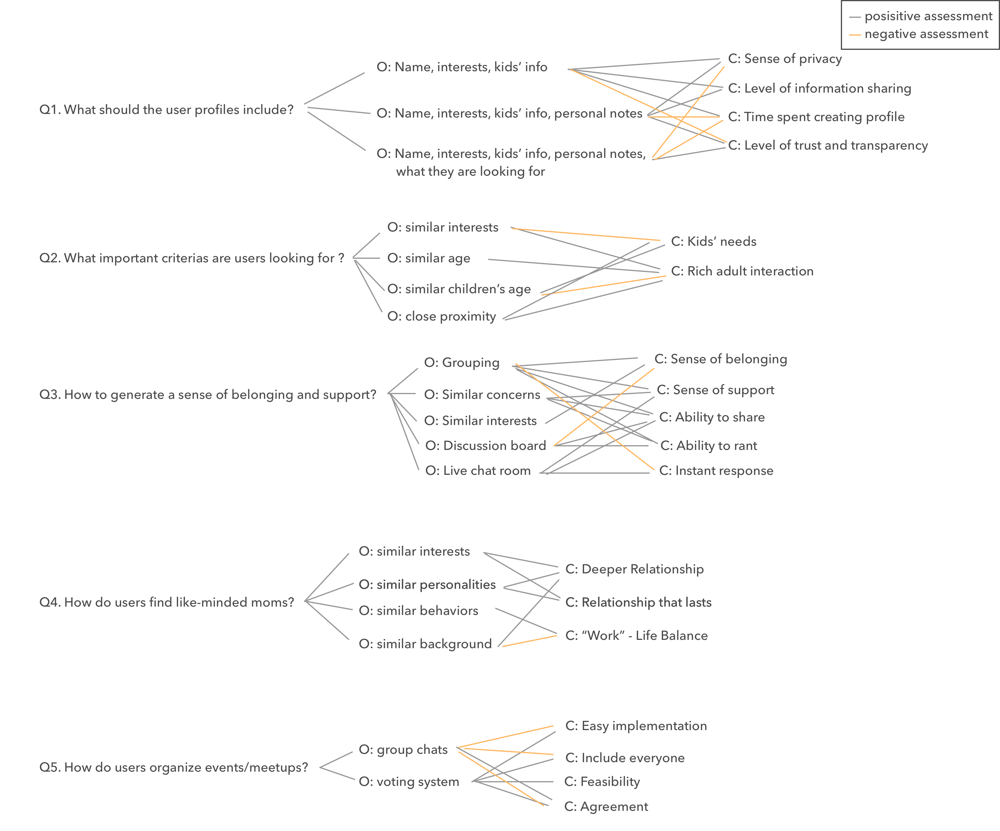
| Information Architecture
To better construct the backbone of my application, I created an information architecture diagram that helps guide the design logic and structure.
- 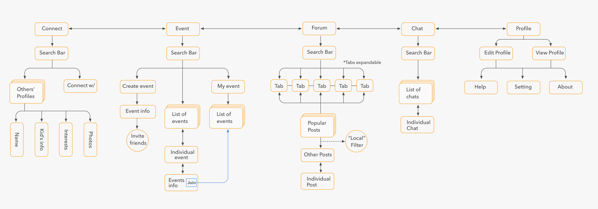
| Prototype
I made paper prototype to visualize basic functions and interactions.

Validate and Iterate
| Rapid Iteration
I used paper prototypes to conduct two rounds of usability tests and iterate based on the feedback I received. Participants of the tests include potential users and my peers.

| Design Changes
Talking and testing concepts with potential users and peers throughout the entire process allowed me to improve my design and optimize user experience. These are 3 of the design changes:
1. Remove personality test
Originally, there was a personality test during signup that helped the system match people with similar personality types. However, users thought it is not necessary.
" It is a little overwhelming to do this at the beginning. "
2. Highlight same interests
When browsing through others’ profiles, I added a highlight showing what mutual hobbies they have.
" It would be nice to see what interests we share together. "
- 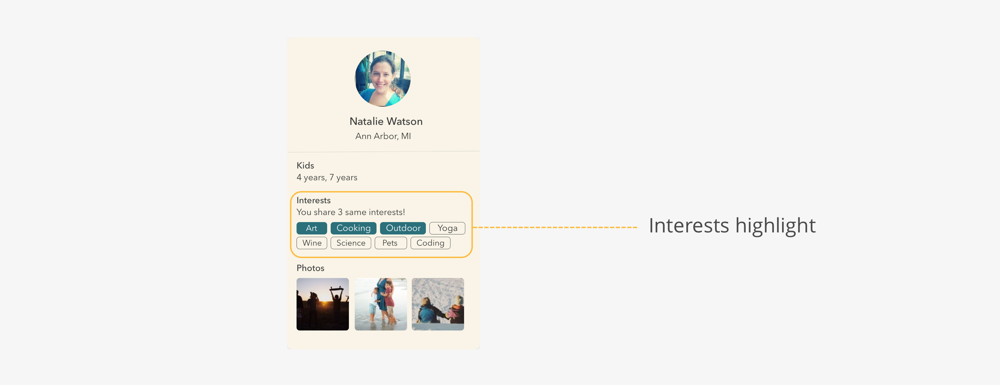
3. Provide quick instructions on “connect”
A box will pop up when users arrive at connect tab for the first time. It simply tells them to swipe left and right to view profiles and send coconut to connect.
Social Impact
- 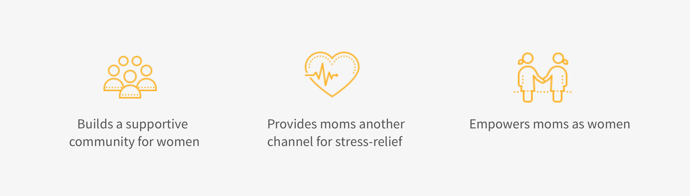
What I learned
| Engage users early in the process, and throughout the process.
I learned the importance of finding user’s needs and validate my assumptions early because it is more practical and efficient than trying to find solutions to problems later on in the process. With the initial interviews, survey, and multiple user testing, I was able to engage the potential users throughout the process. It was immensely helpful because it kept reminding me that I am not just designing for myself.
Next Steps
I plan to incorporate more branded elements into my narrative and overall design. Currently, I have the image “Tropics” established, but I focused more on the usability and interaction rather than the branding. Now with the completed structure and key features, it is time to add some spices into user experience by giving the users more taste of being in the "tropics".